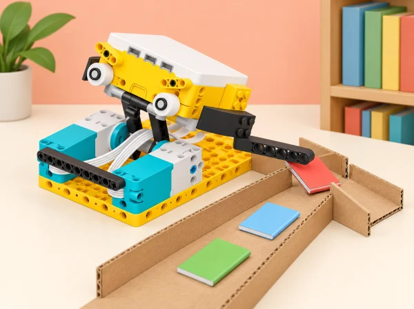

Adaptació de la unitat Training Trackers per al context d’un centre educatiu valencià. Cada sessió conserva l’objectiu oficial i el tradueix en un repte, materials i criteris propis; quan una activitat del pla és híbrida o no requereix el hub, s’indica expressament en la sessió.
La unitat oficial combina indagació científica, registre de dades i disseny. En aquesta adaptació, els fenòmens es mesuren en mecanismes de maqueta: ningú no ha de fer exercici ni compartir dades corporals. Cada equip manté un quadern amb hipòtesi, variables controlades, dades repetides, gràfic i una conclusió que indique el marge d’incertesa.
Pregunta: com podem reproduir un moviment llegint una gràfica generada per un sensor? En lloc de demanar a l’alumnat que seguisca postures de ioga, fixem el hub en un suport rígid i segur i el movem a mà —lentament, sense deixar-lo caure— en tres orientacions acordades. Llegim les sèries de pitch, roll i yaw segons la convenció d’eixos que mostra l’app; el yaw descriu un gir al voltant del seu eix, no una inclinació. Primer observem una gràfica de mostra ja enregistrada, anotem en quin ordre i amb quin ritme es produeixen els canvis i després intentem reproduir-ne la forma amb el moviment del hub. Compareu dos ritmes per al mateix recorregut: la velocitat pot canviar la forma de la traça. A continuació, ajusteu el programa per registrar dos valors alhora i reproduïu un segon gràfic combinant dos moviments. Tanqueu fent que un altre equip interprete la gràfica sense veure la seqüència original; com a extensió matemàtica, descriviu un tram recte i estimeu-ne la pendent en la forma y = mx + b. Evidència: hipòtesi, gràfica pròpia anotada, descripció de la relació entre moviment i línia i comparació qualitativa del marge d’error entre intents. Si la connexió USB/Bluetooth o el gràfic en directe no funciona, usem dades de mostra i dibuixem la predicció en paper; indiquem clarament que no és una lectura capturada en directe.
Pregunta: què ha de canviar en el motor quan una bicicleta de maqueta puja mantenint una velocitat semblant? Muntem un vehicle amb motor i fem una prova en pla per conéixer el consum del motor i l’angle registrat; després el fem pujar per una rampa baixa amb dos pendents. Mantinguem constants el vehicle, la càrrega, el punt d’inici i el programa, i registrem en viu el consum del motor i la inclinació mentre el motor procura conservar una velocitat semblant. Compareu les línies del gràfic en pla i en rampa i relacioneu més aportació elèctrica amb guanyar energia potencial, sense dir que el sensor mesura directament tota l’energia del sistema. Després dissenyeu una ruta pròpia amb tram pla, pujada i baixada: dibuixeu la forma de consum que prediu abans de provar-la i compareu consum respecte del temps i respecte de l’angle de pendent. Escriviu la hipòtesi i les conclusions al quadern d’indagació; exportar CSV és opcional. Evidència: hipòtesi, gràfic pla/rampa i de la ruta pròpia, taula d’assaigs i explicació de la relació entre pendent i consum. Sense ordinador, llegiu les mostres de la gràfica en equip.
Pregunta: com podem comparar l’alçada màxima d’un moviment sense mesurar el cos de ningú? Canviem el salt humà per un petit mecanisme que eleva un marcador lleuger al llarg d’una guia vertical: fixem un sensor de distància extern del kit SPIKE apuntant cap al marcador i fem lectures sobre una superfície plana, sense deixar caure peces. Fem tres alçades controlades i repetim cada prova. Després explorem estimacions alternatives a partir de l’acceleròmetre integrat al hub, d’un vídeo lateral amb escala visible o del temps de moviment; documentem l’orientació del hub i comparem cada mètode amb la mesura de regla. Per explorar el paper de la massa sense carregar cap persona, repetim l’anàlisi amb dues masses lleugeres conegudes subjectades al mateix marcador i a la mateixa alçada. La integració de l’acceleració acumula error i s’ha de presentar com una estimació, no com una altura directa. Amb una massa de maqueta coneguda, usem la relació energia potencial = massa × gravetat × alçada (Ep = m × g × h) per predir què canvia quan varia la massa o l’alçada. No afirmem haver mesurat un salt humà ni un valor energètic exacte. Evidència: registre de tres intents, gràfica, comparació entre sensor de distància, regla i estimacions acceleromètrica, de vídeo o de temps, i explicació de quina mesura és més incerta.
Pregunta: què pot inferir un acceleròmetre sobre un moviment repetit i quina incertesa té el recompte? L’objectiu oficial de comptar passos i estimar distància, velocitat mitjana i energia cinètica es trasllada a un carro de maqueta: fixem el hub amb una orientació marcada, fem recorreguts rectes de distància coneguda i llegim l’acceleració en els tres eixos. Definim quin patró repetit comptarem com un «cicle», ajustem el llindar amb una prova curta i comparem el recompte automàtic amb el recompte manual d’un vídeo o observador. Amb una longitud de cicle estimada, calculem una distància aproximada i la velocitat mitjana com distància/temps. Per a una massa de maqueta coneguda, calculem l’energia cinètica associada a eixa velocitat representativa amb Ek = ½ × m × v²; l’anomenem estimació del tram i no mitjana exacta de l’energia al llarg del temps, perquè el carro pot variar de velocitat. Discutim com l’orientació del hub, la regularitat dels cicles i el valor triat de llindar afecten el resultat. No equiparem el carro a la marxa humana ni guardem dades de persones. Evidència: gràfica acceleració/temps, recompte manual i automàtic, distància i velocitat estimades, càlcul amb unitats i una nota de marge d’error. Si la lectura no és estable, treballem les dades acceleromètriques de mostra LEGO i identifiquem les seues limitacions. Com a ampliació, munteu de manera segura un telèfon o una tauleta al mateix carro, empreu una app que mostre acceleració i compareu la seua gràfica amb la del hub; cap dispositiu va sobre una persona ni s’hi registren dades personals.
Pregunta: què podem inferir del moviment quan varia la velocitat d’un objecte de massa coneguda? Muntem un vehicle de rodes lliures que compta rotacions, com en el model de curling de l’activitat oficial; el programa registra com es desplaça després d’una empenta manual suau i controlada des d’una línia marcada. Registrem les rotacions al llarg del temps; amb la circumferència mesurada, convertim-les en distància i representem distància/temps. A partir de la pendent de la gràfica estimem la velocitat al llarg del recorregut i l’energia cinètica corresponent per a una massa coneguda amb la relació Ek = ½ × m × v², identificant-ho com un valor estimat perquè la velocitat varia i les dades tenen resolució limitada. En una segona part fem el joc oficial adaptat: tres intents per equip cap al centre d’una diana ampla i tova; després de cada intent mesurem la distància entre la part frontal del vehicle i el centre i comparem la suma dels tres errors i identifiquem quin disseny s’ha acostat més al centre, com en el joc de precisió original; no puntuem la força de qui empeny ni la rapidesa d’una persona. Com a ampliació d’enginyeria opcional, dissenyeu un impulsor mecànic que faça l’empenta més regular i compareu els resultats amb l’impuls manual. Evidència: gràfiques de rotació, distància i velocitat, càlcul amb unitats, tres distàncies a la diana, identificació del disseny amb error acumulat més baix i reflexió sobre el marge d’error. No s’utilitza una ampolla plena ni càrregues que comprometen el muntatge.
Repte obert: dissenyeu un joc de maqueta amb moviment de pujada/baixada, pèndol o balancí que permeta observar energia potencial i cinètica. En la primera part, cada equip esbossa dues o tres idees i n’escull una amb criteris de seguretat, estabilitat i dades que puga registrar; construeix un prototip amb peces SPIKE Prime i materials lleugers. En la segona part, fa assaigs, registra una variable del hub o una mesura manual, grava el mecanisme si és útil i millora una part a partir de les dades. Tanqueu amb una mostra: els equips s’entrevisten per torns, anoten preguntes i observacions, comparen interpretacions del gràfic i expliquen una limitació del model. Amb dos dispositius segurs disponibles, compareu també registres del mateix mecanisme i comenteu diferències de sensor/mostreig. Evidència: esbós, taula/gràfic, vídeo o seqüència dibuixada, millora justificada i autoavaluació. Per començar, oferiu tres mecanismes senzills a triar; com a extensió, deixeu que l’equip propose i contraste el seu propi protocol experimental.
Set SPIKE Prime i l’app compatible per a enregistrar dades del hub, motors i sensors; peces per a vehicle, suport de gir, elevador i pista; taula o rampa curta i estable; masses de maqueta lleugeres, regle, cinta de paper i ordinador opcional per obrir CSV. Abans de classe, proveu els ports, la connexió i els blocs d’adquisició de dades de la versió instal·lada. Fixeu el hub segons cada muntatge, deixeu el recorregut lliure i limiteu altura, velocitat i massa.
El quadern de cada equip —elaborat ací com a alternativa pròpia al quadern d’inventor de LEGO— mostra una hipòtesi, el protocol i les variables controlades, les dades repetides, una gràfica amb eixos i unitats, el marge o la font d’error i una conclusió limitada al que realment s’ha mesurat. La llista d’observació docent comprova quatre indicadors: el programa registra dades del sensor en una gràfica; l’equip relaciona la traça amb el moviment del model; interpreta la magnitud científica tractada en la sessió (orientació, transferència d’energia, altura, acceleració o velocitat); i comunica una conclusió amb les limitacions de la mesura. No s’avalua el resultat físic ni qui fa moure el model.
En cada sessió, l’alumnat fa una autoavaluació amb tres nivells visuals: «interprete una gràfica amb ajuda», «dissenye una prova i explique les dades» i «propose una prova nova, en revise el protocol i defense una conclusió». Després, una parella revisora assenyala una evidència concreta i formula una pregunta o suggeriment útil. Aquesta escala pròpia manté la progressió d’autoavaluació i retorn entre iguals dels plans oficials sense copiar-ne els materials.
Abans de les sessions, el docent comprova l’app SPIKE, la connexió USB/Bluetooth, els blocs de registre i la configuració dels sensors del muntatge; prepara dades de mostra datades per si no es pot enregistrar en directe. Les durades de la seqüència corresponen al treball d’aula; la preparació prèvia i la posada en comú posterior es poden distribuir en altres moments. Si l’accés a un set és limitat, l’alumnat completa el quadern amb les dades de la sessió i les mostres pròpies, en lloc de presentar dades inventades com si foren capturades.
Les ajudes i ampliacions conserven les opcions de les lliçons originals en contextos de maqueta: a S1 es pot treballar només amb el hub subjectat i un gràfic de mostra, o bé construir un suport propi i intercanviar gràfiques amb una altra parella; a S2 es comença explicant una proporcionalitat directa amb una taula senzilla i s’amplia amb un protocol creat per l’equip; a S3 es redueix el muntatge al hub i al sensor disponible i es comparen estimacions amb vídeo o temps; a S4 es fixa el hub perpendicular a la superfície i es compten cicles manualment abans d’ajustar el programa, amb comparació opcional d’un mateix carro amb hub i tauleta; a S5 es pot limitar l’anàlisi a distància-temps, o dissenyar un vehicle lliure i un impulsor més regular; a S6 es donen quatre o cinc exemples de mecanismes perquè l’equip en trie un, o es fa una pluja d’idees col·lectiva abans del disseny autònom. Vídeos, taules de lectura gran i peces per representar les dades permeten participar sense controlar el robot; els rols de mesura, programació, registre i comunicació roten.
La seqüència es correspon sessió per sessió amb les sis lliçons de la unitat LEGO Education Training Trackers · SPIKE Prime: Stretch with Data treballa pitch/roll/yaw i la lectura de gràfiques; This Is Uphill compara consum del motor i pendent; Time for Squat Jumps relaciona altura i energia potencial; Watch Your Steps explora l’acceleració i la velocitat; Aim for It transforma rotació en distància, velocitat i energia cinètica; The Obstacle Course integra el disseny d’un repte i el registre de dades. S’adapta el sistema de mesura del cos a models controlats, mantenint aquests objectius científics i computacionals. No es registren moviments, rendiment ni cap dada de salut de persones.